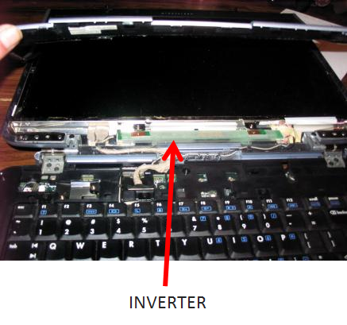

PCH17-Notebook Features <<
Previous Next >> Device Replacement-
Laptop Displays-
Unlike desktop computers, laptops have a built-in monitor. These displays cannot be upgraded or changed out for a “better model.” So, it is important that users select laptops that have displays they are happy with because it is one of the most important components from the user perspective. Over the years, manufacturers have used plasma and Light-Emitting Diode (LED) technology for displays, but display technology eventually converged on Liquid Crystal Display (LCD) backlit with LED. Plasma was one of the first display technologies used for laptops but was discarded in favor of the lighter LED and LCD. Organic Liquid Crystal Display (OLED) is expanding in the mobile telephone market and has recently started to become viable for laptop displays.
Plasma displays were popular in early 1990s laptops when a 15- to 20-pound unit was acceptable. At that time, plasma only produced a black and white display. Plasma displays tend to weigh more than either LCD or LED, but offer better contrast ratios. In addition, plasma displays do not require backlighting. While plasma is not used in modern laptop displays (internally), it is used in a large number of televisions, which now can be connected through HDMI or DisplayPort as a secondary monitor.
The second technology used in laptop displays is the LED display, which is very similar to an LCD display. The main difference between LCD and LED display is the type of backlight used. LED displays use an LED bulb for the backlight, instead of cold compact fluorescent light (CCFL). The reason for this is that LED bulbs use less power than CCFLs, thereby increasing the battery life of the laptop during operations. LED displays tend to be thinner and initially lost ground in the laptop market to LCD displays with CCFL backlighting.
LCDs utilize an active-matrix display with a transistor for every dot in the screen known as a pixel. Display technology uses pixel count measurements such as 640 (vertical pixels) x 480 (horizontal pixels); 800 x 600, or 1024 x 768; aspect ratios such as 4:3, 16:9, or 16:10; and lines of horizontal resolution such as 480p, 702i, and 1080p to name a few. Displays are measured diagonally, so a 17” laptop is the viewable area measured from corner to corner.
Current LCD display resolution can range from a tablet or a 2-in-1, which might be 1366 x 768, to Ultrabook with 1920 x 1080 full HD, or business class and gaming rigs that can provide Ultra HD resolutions with a still higher pixel count. In a standard display with a resolution of 1920 x 1080, there are more than one million transistors used to provide the image on the screen. Originally, LCDs used a CCFL backlight to illuminate the transistors and provide the image on the screen. If the backlight fails, the laptop will not display an image and the CCFL will need to be replaced. This is not very common, though, because CCFL bulbs usually last for 50,000 hours of usage.
Laptops run on direct current (DC) power from the battery or the power adapter. LCD CCFL laptop displays, though, require alternating current (AC) to power their backlights. The inverter in a laptop performs this conversion function from low-voltage DC to high-voltage AC. If the inverter fails, which was a common problem, a technician is required to replace this part. Luckily, these inverters are not too costly and can be replaced by a technician without too much difficulty. In the image below, you can see the typical location of a laptop’s inverter in the bevel of the laptop display.

Inverter on a laptop. Photo used under CC-BY-NC-ND license from chriggy1.
Although using the CCFL provides a higher quality and more consistent image, laptop manufacturers for the most part have achieved similar quality with HD resolutions using an LED backlit LCD display. Effectively lighter and less power consuming, this is the current trend for most laptops on the market. With the continuing development of HD, QHD, and UHD resolutions in the television display market, laptop manufacturers are incorporating these features into higher end gaming and professional media systems. The table below is indicative of some common resolutions by native resolution and corresponding standard:
| Source: Russell Burchill |
| Pixel RatioNative Resolution |
Aspect Ratio |
Standard &Resolution |
| 640×480 |
4:3 |
VGA |
| 1280x 720 |
16:9 |
WXGA (720p equivalent) |
| 1366×786 |
16:9 |
HD |
| 1680×1050 |
8:5 |
WSXGA |
| 1920×1080 |
16:9 |
FHD (1080p equivalent) |
| 1920×1200 |
16:10 |
WUXGA |
| 2560x 1440 |
16:9 |
QHD |
| 2560x 1600 |
16:10 |
WQXGA |
| 3840x 2160 |
16:9 |
4K UHD |
|
Every LCD and LED display is built with a native resolution. This means that every display has an optimal display quality that can be achieved only when the signal input matches the native resolution. If the laptop display has a native resolution of 1920 x 1080 (1080p), then every other resolution that the laptop display uses is either scaled up (stretched) or scaled down (shrunk). This affects the display of all the elements on the laptops including video, images, and desktop elements.
When choosing a laptop, ensuring the display meets your needs is important. The two types of LCDs available are Twisted Nematic (TN) and In-Plane Switching (IPS). The type of LCD controls the viewing angle, ghosting, response time, and native resolution. Generally, a manufacture offers one or the other in a product line, so knowing your usage patterns helps to inform decisions when purchasing a laptop. Replacing a laptop display requires the technician to order the precise replacement type from either the manufacturer or a third-party seller as the replacement must match the original.
TN LCDs have a tendency to be less expensive and have faster response times than IPS LCDs. They also have a smaller viewing angle than IPS LCDs so they work well for the laptop environment where the user is typically located directly in front of the machine. The viewing angle is a measure of the amount of the display that can be seen adequately at a certain degree from the center of the screen. A wide viewing angle may be a privacy concern for some, while it could be considered a benefit by others. Many laptops now boast a viewing angle of up to 170 degrees, providing maximum flexibility in their displays.
TN LCDs also have a faster response time, which is how fast the pixels move from state to state (black to white or grey to grey). Response times are measured in milliseconds (ms) with TN coming in between 1-2ms and IPS between 3-5ms. The color variations are tied to the input and output commands as translated to the display. For uses such as gaming and video editing, TN is generally preferred over IPS.
In spite of the advantage between cost and response times, manufacturers will often use IPS in business class machines and higher end gaming laptops because of better color reproduction and viewing angle. An IPS display combined with a higher quality graphics card can make up for slightly slower response times.
Other considerations in choosing a display are contrast ratio–the measure of the difference between the lightest and darkest portions of the display–and brightness, which is the overall measure of lightness or darkness.
The last option for laptop displays is the newest technology–organic LED (OLED)–which uses organic compounds between electrodes to emit light instead of an LCD or LED bulb. These are still not widely used in the laptop market but as the technology becomes more common in the cellular telephone market, it is driving changes in the laptop market. OLED provides a superb color depth and much better contrast ratio than traditional LCD/LED displays but their cost is still prohibitive in modern laptops. As of early 2016, four manufacturers have slated a spring release of OLED laptops.
The last item for consideration is completely unrelated to the display itself but is a function of the display being the tallest element on the laptop. Due to this fact the WLAN antennae are routed up onto the top of the display under the bezel. Care must be taken when repairing displays and removing the bezel so as to not harm the antennae. This is especially important since the incorporation of Wireless-n NIC cards in laptops.
learn by doing-
Which of the following is not a type of laptop display?
(LED:Incorrect. LED is a type of laptop display.
LCD:Incorrect. LCD is a type of laptop display.
IAD:Correct. IAD is not a type of laptop display.
OLED:Incorrect. OLED is a type of laptop display.)
Hint:LED is a type of laptop display.
LCD is a type of laptop display.
OLED is a type of laptop display.
Which statement is true about plasma screens?
(1:Incorrect. Plasma and OLED do not use the same type of lighting technology.
2:Correct. Plasma screens do not require backlighting.
3:Incorrect. Plasma displays were popular in early 1990s laptops, when a 15- to 20-pound unit was acceptable.
4:Incorrect. Plasma screens do not require backlighting.)
Hint:Plasma and OLED do not use the same type of lighting technology.
Plasma displays were popular in early 1990s laptops, when a 15- to 20-pound unit was acceptable.
Plasma screens do not require backlighting.
did I get this-
What is backlighting? Choose the best answer.
(1:Incorrect. Backlighting does not involve the operating system screen saver.
2:Incorrect. Backlighting does not illuminate hidden files.
3:Correct. Backlighting is the illumination of transistors that provide an image on the screen.
4:Incorrect. Backlighting is the illumination of transistors that provide an image on the screen.)
did I get this-
Match the feature to the appropriate type of display
筆記本電腦顯示器-
與台式計算機不同，筆記本電腦具有內置顯示器。這些顯示器無法升級或更改為“更好的型號”。因此，重要
的是用戶選擇具有他們滿意的顯示器的筆記本電腦，因為從用戶角度來看，它是最重要的組件之一。多年來
，製造商已將等離子和發光二極管（LED）技術用於顯示器，但是顯示技術最終融合到了具有LED背光的液晶
顯示器（LCD）上。等離子是最早用於筆記本電腦的顯示技術之一，但由於更輕的LED和LCD而被丟棄。有機
液晶顯示器（OLED）在移動電話市場中正在擴展，最近開始在筆記本電腦顯示器中變得可行。
等離子顯示器在1990年代初的筆記本電腦中很受歡迎，當時可接受15至20磅的設備。那時，等離子僅產生黑
白顯示。等離子顯示器的重量往往超過LCD或LED，但對比度更高。另外，等離子顯示器不需要背光。儘管等
離子不在現代筆記本電腦顯示器中（內部使用），但已在大量電視中使用，現在可以通過HDMI或
DisplayPort將其連接為輔助顯示器。
筆記本電腦顯示器中使用的第二種技術是LED顯示器，它與LCD顯示器非常相似。 LCD和LED顯示屏之間的主
要區別在於所使用的背光類型。 LED顯示器使用LED燈泡代替背光源，而不是冷緊湊型熒光燈（CCFL）。原
因是LED燈泡比CCFL耗電少，從而延長了筆記本電腦在操作過程中的電池壽命。 LED顯示器趨於更薄，最初
在筆記本電腦市場上被帶CCFL背光的LCD顯示器所取代。
LCD使用有源矩陣顯示器和一個晶體管，用於屏幕中每個點（稱為像素）。顯示技術使用像素計數測量，例如
640（垂直像素）×480（水平像素）； 800 x 600或1024 x 768；長寬比，例如4：3、16：9或16:10；
以及水平分辨率的線條，例如480p，702i和1080p等。顯示屏是對角線測量的，因此17英寸筆記本電腦是從
一個角落到另一個角落的可見區域。
當前的LCD顯示分辨率範圍從平板電腦或2合1（可能是1366 x 768）到具有1920 x 1080全高清的
Ultrabook，或者可以提供更高像素的超高清分辨率的商務和遊戲設備計數。在分辨率為1920 x 1080的標
準顯示器中，有超過一百萬個晶體管用於在屏幕上提供圖像。最初，LCD使用CCFL背光來照亮晶體管並在屏
幕上提供圖像。如果背光燈失效，則筆記本電腦將不會顯示圖像，並且需要更換CCFL。但是，這不是很常見
，因為CCFL燈泡通常可持續使用50,000小時。
筆記本電腦依靠電池或電源適配器的直流（DC）電源運行。但是，LCD CCFL筆記本電腦顯示器需要交流電
（AC）為背光燈供電。筆記本電腦中的逆變器執行從低壓DC到高壓AC的轉換功能。如果逆變器出現故障
（這是常見問題），則需要技術人員更換該部件。幸運的是，這些逆變器並不太昂貴，可以很容易地由技術
人員更換。在下圖中，您可以在筆記本電腦顯示屏的斜角中看到筆記本電腦逆變器的典型位置。
筆記本電腦上的逆變器。照片由chriggy1以CC-BY-NC-ND許可使用。
儘管使用CCFL可以提供更高的質量和更一致的圖像，但是筆記本電腦製造商在大多數情況下已經通過使用
LED背光LCD顯示屏獲得了高清分辨率的類似質量。有效地減輕重量和減少功耗，這是市場上大多數筆記本電
腦的當前趨勢。隨著電視顯示市場中HD，QHD和UHD分辨率的不斷發展，筆記本電腦製造商正在將這些功能集
成到高端遊戲和專業媒體系統中。下表通過原始分辨率和相應的標準指示了一些常見的分辨率：
資料來源：羅素·伯吉爾（Russell Burchill）
|
像素比率原生分辨率
|
長寬比
|
標準與分辨率 |
| 640×480 |
4:3 |
顯卡 |
| 1280x 720 |
16:9 |
WXGA（等效720p）
|
| 1366×786 |
16:9 |
高畫質 |
| 1680×1050 |
8:5 |
WSXGA |
| 1920×1080 |
16:9 |
FHD（相當於1080p） |
| 1920×1200 |
16:10 |
WUXGA |
| 2560x 1440 |
16:9 |
QHD |
| 2560x 1600 |
16:10 |
WQXGA |
| 3840x 2160 |
16:9 |
4K超高清 |
|
每個LCD和LED顯示屏均具有本機分辨率。這意味著只有在信號輸入與原始分辨率匹配時，才能實現每個顯示器的最佳顯示質量。如果便攜式計算機顯示器的原始分辨率為1920 x 1080（1080p），則便攜式計算機顯示器使用的所有其他分辨率將按比例放大（拉伸）或按比例縮小（縮小）。這會影響筆記本電腦上所有元素的顯示，包括視頻，圖像和桌面元素。
選擇筆記本電腦時，確保顯示屏滿足您的需求非常重要。可用的兩種LCD類型為扭曲向列（TN）和平面內切換（IPS）。 LCD的類型控制視角，重像，響應時間和原始分辨率。通常，製造商在產品線中提供一個或另一個，因此了解您的使用方式有助於在購買筆記本電腦時做出決定。更換筆記本電腦顯示器時，技術人員必須從製造商或第三方銷售商處訂購準確的更換類型，因為更換的物品必須與原始物品匹配。
TN LCD具有比IPS LCD更便宜，響應時間更快的趨勢。與IPS LCD相比，它們的視角也更小，因此它們可以很好地在通常用戶直接位於機器正面的筆記本電腦環境中使用。視角是可以從屏幕中心以一定程度充分看到的顯示量的度量。對於某些人來說，寬視角可能是一個隱私問題，而對於其他人則可以認為這是一種好處。現在，許多筆記本電腦擁有高達170度的可視角度，在其顯示屏中提供了最大的靈活性。
通過實踐學習-
以下哪個不是筆記本電腦的顯示器類型？
液晶屏
有機發光二極管
(1:不正確。LED是筆記本電腦顯示屏的一種。
2:不正確。LCD是筆記本電腦的一種顯示器。
3:正確。 IAD不是筆記本電腦顯示器的一種。
4:不正確。OLED是筆記本電腦顯示器的一種。)
提示:LED是筆記本電腦顯示屏的一種。
LCD是筆記本電腦的一種顯示器。
OLED是筆記本電腦顯示器的一種。
關於等離子篩，哪種說法正確？
等離子和OLED使用相同類型的照明技術。
等離子屏幕不需要背光。
等離子是顯示器的輕量級技術選擇。
等離子屏幕需要背光。
(1:不正確。等離子和OLED不使用相同類型的照明技術。
2:正確。等離子屏幕不需要背光。
3:不正確。等離子顯示器在1990年代初期的筆記本電腦中很受歡迎，當時可接受15至20磅的設備。
4:不正確。等離子屏幕不需要背光。)
暗示:等離子和OLED不使用相同類型的照明技術。
等離子顯示器在1990年代初的筆記本電腦中很受歡迎，當時可接受15至20磅的設備。
等離子屏幕不需要背光。
我得到這個了嗎-
什麼是背光？選擇最佳答案。
可以對操作系統屏幕保護程序進行的配置，以保留 不活動時的電源。可以在BIOS中啟用該選項以照亮系統中的隱藏文件。
顯示晶體後面或側面發出的光線，因為它們本身沒有任何發光能力。以上都不是。
(1:不正確。背光不涉及操作系統的屏幕保護程序。
2:不正確。逆光不會照亮隱藏的文件。
3:正確。背光是在屏幕上提供圖像的晶體管的照明。
4:不正確。背光是在屏幕上提供圖像的晶體管的照明。)
將功能匹配到合適的顯示類型
1-2 ms的響應時間
廣視角
窄視角
豐富的色彩深度和更好的對比度
(TN:更少的色彩深度和對比度、窄視角、1-2 ms的響應時間
IPS:3-5 ms的響應時間、廣視角、豐富的色彩深度和更好的對比度)
PCH17-Notebook Features <<
Previous Next >> Device Replacement-